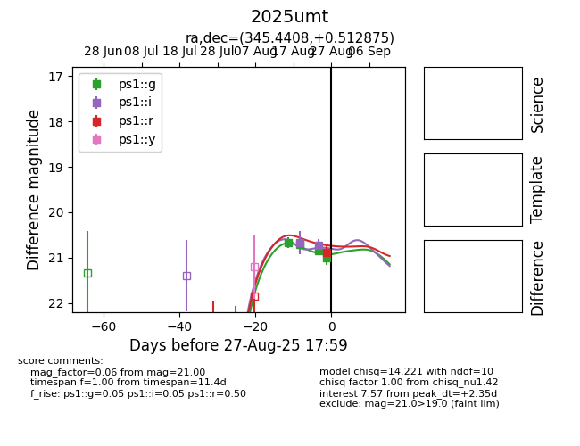

Target 2025umt at 2025-08-27 18:08, see:
YSE: ziggy.ucolick.org/yse/transient_detail/2025umt
alt names
2025umt (yse)
coordinates:
equatorial (ra, dec) = (345.4408,+0.51288)
galactic (l, b) = (74.8012,-51.80383)
photometry
last ps1::g=21.00, ps1::i=20.72, ps1::r=20.89
4 ps1::g, 2 ps1::i, 1 ps1::r detections
